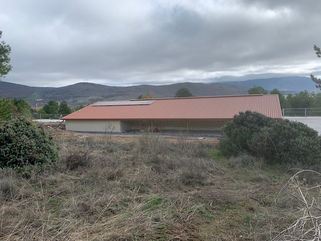
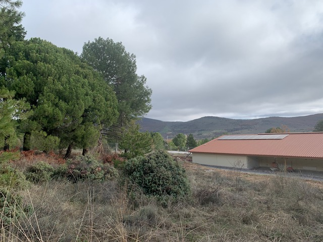
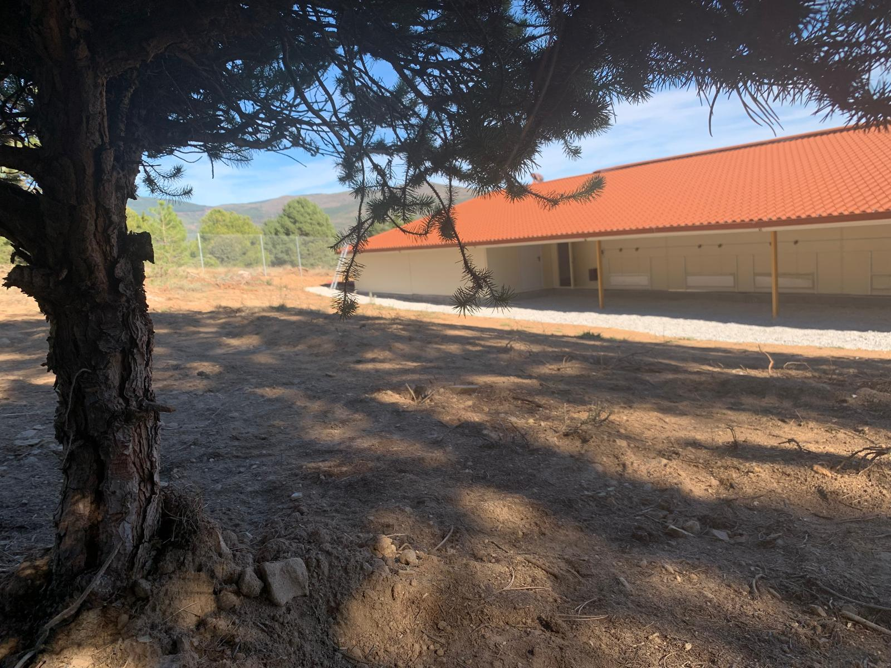
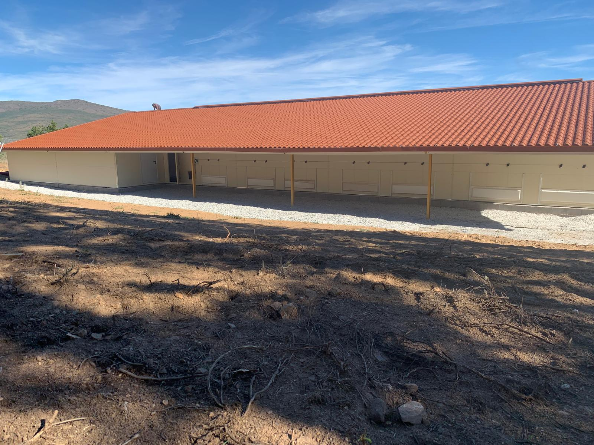
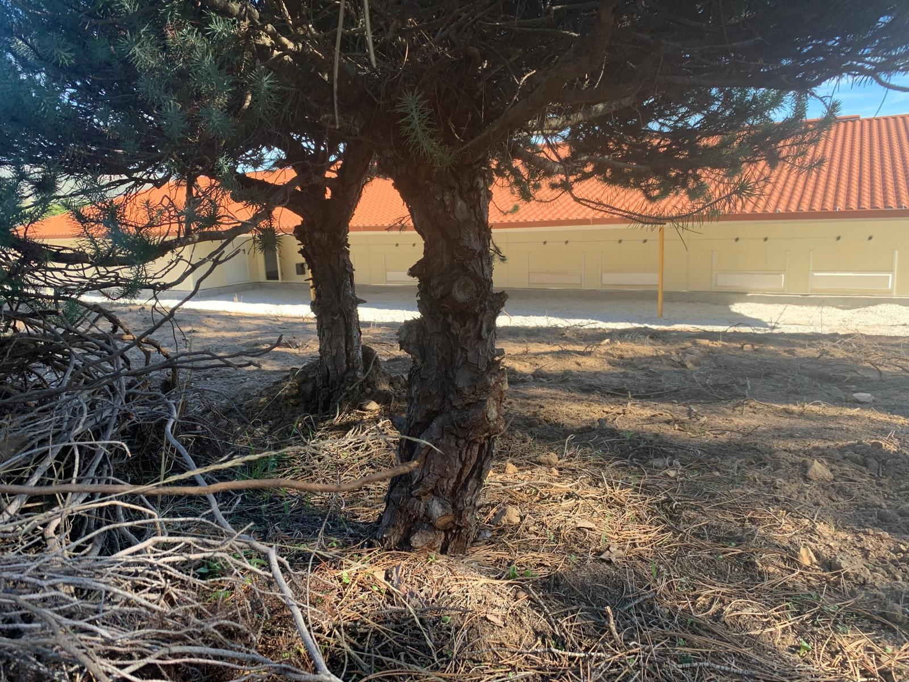
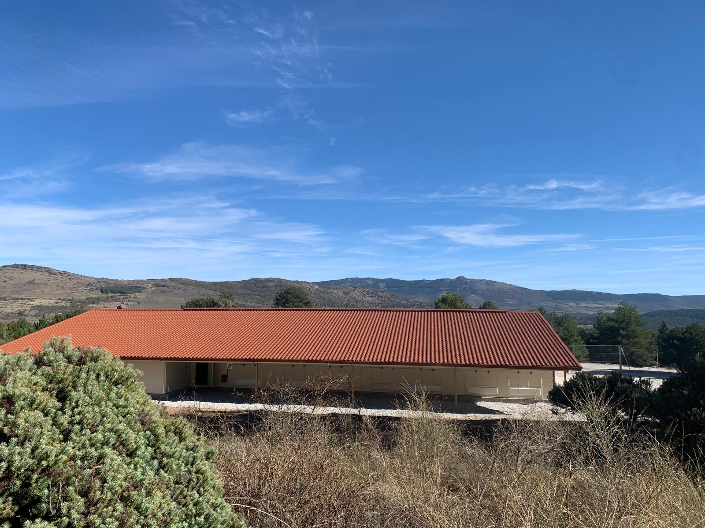
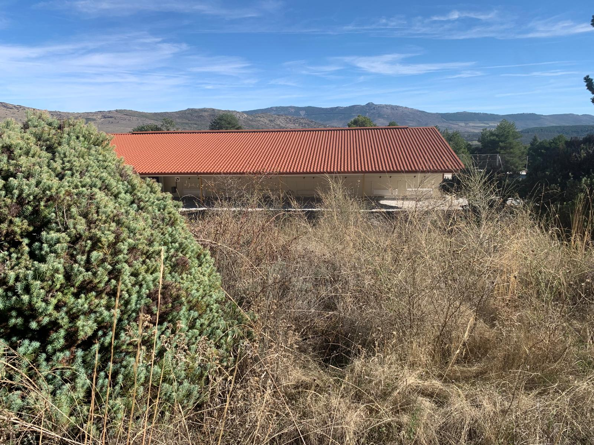

EL GALLINERO Y LAS INSTALACIONES
Tanto el gallinero como los parques donde pastorean las gallinas los hemos hecho siguiendo y aumentando todo lo que hemos podido las exigencias de la normativa ecológica.
Con respecto al gallinero, cuenta con 300 m² para albergar a 1.600 gallinas (según la normativa ecológica son 6 gallinas/m²). Hemos hecho el gallinero con un porche de 72 m² que sirve para que cuando por cuestiones epidemiológicas o climáticas las gallinas no puedan salir a pastorear libremente, cuenten con este porche donde poder salir y hacer sus actividades lo más normal posible.
El gallinero cuenta con una instalación fotovoltaica en el tejado que la nutre de la electricidad necesaria y obtenemos el agua de un sondeo registrado y controlado su caudal por la Confederación Hidrográfica del Tajo.







Nuestro gallinero, abierto al pinar y 100% autosuficiente.